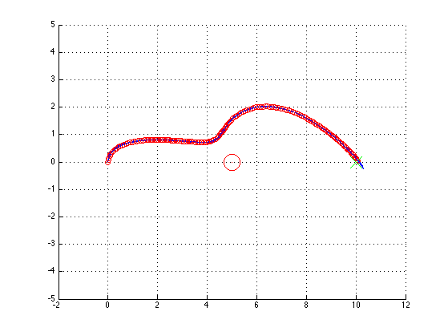

Contents
HW 3, Problem 2
ELEC 5530 - Thaddeus Roppel 2012/09/04 Markus Kreitzer, Levi Smolin, Ray Preston
clear all;
clc;
Declare Constants
r = 0.05; % wheel radius l = 0.05; % half the vehicle wheelbase Zeta_I = [0;0;0]; % X,Y,Theta of robot position in global coordinates GoalPos = [10;0;0]; % X,Y,Theta of Goal ObstaclePos = [5;0;0.5]; % X,Y,Radius of Obstacle rForce = 1; % Repulsive Force of the obstacle aForce = 0.1; % Attractive Force Field = zeros(3,1); % Total Potential Field( x-dir, y-dir, angle ) aField = zeros(2,1); % Attractive field due to goal rField = zeros(2,1); % Repulsive field due to obstacle timeDiv = 0.1; wSpeeds=[0;0]; %Left and Right Wheel speeds
Run through six different scenarios where the wheel velocities vary.
figure; while 1 aField = aForce*((GoalPos(1:2)-Zeta_I(1:2))); p_q = norm(ObstaclePos(1:2)-Zeta_I(1:2)); if p_q~=0 rField = -rForce*((1/p_q))*(1/(p_q*p_q))*((ObstaclePos(1:2)-Zeta_I(1:2))/p_q); end Field(1:2)=aField+rField; if( atan(rField(2)/rField(1)) - Zeta_I(3) == 0 ) Zeta_I(3) = pi/2; end if Field(1)==0 && Field(2)== 0 Field(3)=0; elseif Field(1)==0 Field(3)=pi/2; elseif Field(2)==0 Field(3)=0; else Field(3)=atan(Field(2)/Field(1)); if Field(1)<0&&Field(2)<0 Field(3)=(pi)+Field(3); elseif Field(1)<0&&Field(2)>0 Field(3)=(pi)+Field(3); end end Zeta_I_dot=[Field(1);Field(2);Field(3)-Zeta_I(3)]; R_theta = [cos(Zeta_I(3)),sin(Zeta_I(3)),0;-sin(Zeta_I(3)),cos(Zeta_I(3)),0;0,0,1]; Zeta_L_dot = R_theta * Zeta_I_dot; %Now to solve the set of equations to find the wheel speeds B=[Zeta_L_dot(1);Zeta_L_dot(3)]; A=[ r/2, r/2; r/(2*l), -r/(2*l) ]; wSpeeds=A\B; hold1 = GoalPos(1) - Zeta_I(1); hold2 = GoalPos(2) - Zeta_I(2); if (wSpeeds(1) < 10 && wSpeeds(2) < 10 && hold1 ~= 0 && hold2 ~= 0) wSpeeds(1) = wSpeeds(1) + 10; wSpeeds(2) = wSpeeds(2) + 10; end R_inv_theta = [cos(Zeta_I(3)),-sin(Zeta_I(3)),0;sin(Zeta_I(3)),cos(Zeta_I(3)),0;0,0,1]; % Velocity matrix Zeta_I_dot = R_inv_theta * [ (r * wSpeeds(1))/2 + (r * wSpeeds(2))/2; 0; (r * wSpeeds(1))/(2*l) - (r * wSpeeds(2))/(2*l); ]; Zeta_I=Zeta_I+(Zeta_I_dot*timeDiv); Zeta_I; hold on plot(Zeta_I(1),Zeta_I(2),'--ro'); plot(5,0,'--ro','MarkerSize',20); plot(10,0,'--gx','MarkerSize',20); grid on; axis([-2 12 -5 5]); %quiver(Zeta_I(1),Zeta_I(2),Field(1),Field(2)); quiver(Zeta_I(1),Zeta_I(2),(0.4*cos(Zeta_I(3))),(0.4*sin(Zeta_I(3)))); drawnow hold off GoalPos; Zeta_I(3); myposition = [ Zeta_I(1), Zeta_I(2) ]; goalposition = [GoalPos(1), GoalPos(2)]; distance = norm(goalposition - myposition); if( distance < 0.1) break; end end str=sprintf('We have arrived at your destination. Thank you for flying HAL 9000 Airlines.\nThe Sentients will have your luggage waiting for you at the terminal.\n'); disp(str);
We have arrived at your destination. Thank you for flying HAL 9000 Airlines. The Sentients will have your luggage waiting for you at the terminal.